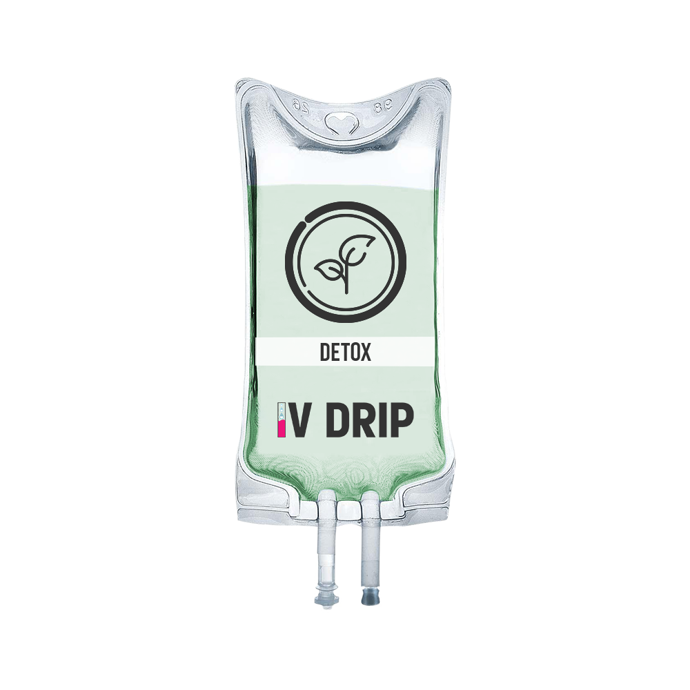

"Хочу висловити щиру подяку фельдшеру Михайлу. Його професійний підхід і здатність заспокоїти мене зробили всю ситуацію легшою."
Валентина
Крапельниця Детокс — заряд потужних природних антиоксидантів, які допомагають очистити печінку, шкіру та забезпечити загальну природну детоксикацію організму .

Якщо ви відчуваєте втому, зниження працездатності, часті головні болі або помітили погіршення стану шкіри — організм потребує очищення.
Очищення організму — важлива складова збереження краси та здоров'я. Спеціалісти рекомендують очистити себе зсередини кожному, незалежно від віку.
Особливо якщо ви живете у великому місті, вживаєте алкоголь, перенесли захворювання або отруєння. Найефективнішим методом у цьому випадку буде крапельниця Детокс зі спеціальним складом.
Препарат практично не має протипоказань і засвоюється майже на 100% — виводить токсини, відновлює дефіцит рідини та вітамінів.
Пацієнти часто шукають цю послугу під назвами «крапельниця детокс», «капельница детокс» або «капельница для очищения организма» (російськомовний варіант). У медичній практиці використовують термін Intravenous Detox Therapy або Glutathione Detox Drip. Усі ці назви позначають внутрішньовенне введення глутатіону, вітаміну С та вітамінів групи В з метою посилення природних процесів очищення організму. На нашому сайті ми дотримуємося української термінології й називаємо її крапельниця «Детокс».
При пероральному прийомі значна частина глутатіону та вітамінів руйнується в шлунково-кишковому тракті або метаболізується печінкою ще до потрапляння в системний кровотік. Біодоступність перорального глутатіону не перевищує 15%. Внутрішньовенне введення дозволяє доставити 100 % дози безпосередньо в плазму, оминаючи печінковий метаболізм першого проходження. Потрапивши в кров, глутатіон швидко захоплюється гепатоцитами — клітинами печінки, де він є ключовим компонентом другої фази детоксикації. Він зв'язує токсини, важкі метали, продукти окислення та сприяє їх виведенню з жовчю. Вітамін С підтримує глутатіон у відновленій формі, а вітаміни групи В служать кофакторами для багатьох ферментних систем, прискорюючи енергетичний обмін та регенерацію клітин. Завдяки цьому досягається комплексний ефект: зменшення оксидативного стресу, покращення функції печінки та нирок, зниження загальної інтоксикації.
Важливо розуміти: крапельниця не «промиває» організм механічно, а дає йому ресурс для власних детоксикаційних шляхів, які можуть бути перевантажені через неправильне харчування, алкоголь, ліки чи забруднене довкілля.
Процедура не потребує спеціальної підготовки і не вимагає реабілітації — одразу після неї можна займатися звичними справами.
Рекомендована схема: 8-10 курсів крапельниць з перервою в 7-10 днів.
2900 грн
Глутатіон — трипептид, що синтезується в кожній клітині організму. У печінці він виконує роль головного детоксиканта: кон'югує з токсичними речовинами (ліки, алкоголь, важкі метали), переводячи їх у водорозчинну форму для виведення з сечею або жовчю. Також глутатіон є кофактором ферменту глутатіонпероксидази, що нейтралізує пероксиди водню та ліпідів, захищаючи мембрани клітин від окисного пошкодження. При хронічній інтоксикації або хворобах запас ендогенного глутатіону виснажується, тому його внутрішньовенне поповнення допомагає відновити антиоксидантний захист.
Окрім антиоксидантної дії, вітамін С необхідний для синтезу колагену, карнітину та деяких нейромедіаторів. Він відновлює окислений глутатіон назад у активну форму, підтримуючи довготривалий антиоксидантний ефект. Також вітамін С покращує засвоєння заліза та сприяє нормалізації проникності капілярів, що важливо для здоров'я шкіри.
Тіамін (В1) бере участь у перетворенні вуглеводів на енергію та підтримує роботу нервової системи. Піридоксин (В6) необхідний для синтезу нейромедіаторів та метаболізму амінокислот. Ціанокобаламін (В12) критично важливий для кровотворення та синтезу мієлінової оболонки нервів. У комплексі вони зменшують відчуття втоми, покращують когнітивні функції та допомагають відновленню після стресів чи хвороб.
Процедура також добре поєднується з крапельницею Попелюшка для посилення косметичного ефекту та з крапельницею для імунітету в осінньо-зимовий період.
Якщо у вас є будь-які сумніви щодо стану здоров'я, медпрацівник може поставити додаткові запитання або рекомендувати відкласти процедуру до консультації з лікарем.
Процедура проводиться стерильно, з використанням одноразових систем. Побічні реакції трапляються рідко. Допустимі короткочасні відчуття:
Негайно повідомте медпрацівника або телефонуйте 103, якщо: з'явилися свербіж, кропив'янка, набряк губ або повік, різкий біль у попереку, утруднене дихання. Хоча такі реакції вкрай рідкісні, наша команда готова діяти за протоколом невідкладної допомоги.
На відміну від «детокс-чаїв» або сокових дієт, які часто спричинюють втрату м'язової маси та дефіцит білка, крапельниця доставляє точно дозовані нутрієнти безпосередньо до клітин-мішеней. Порівняно з пероральними антиоксидантами біодоступність у 6–8 разів вища. На відміну від моно-крапельниці глутатіону, наш склад збагачений синергістами, які не тільки підтримують детокс, але й покращують енергетичний обмін. А на відміну від плазмаферезу чи гемодіалізу, це неінвазивна процедура, яка не потребує госпіталізації.
Глутатіон є добре вивченим антиоксидантом. У клінічних дослідженнях показано, що внутрішньовенне введення глутатіону в дозі 600–1200 мг підвищує його концентрацію в плазмі та еритроцитах, знижує маркери оксидативного стресу (малоновий діальдегід, F2-ізопростани) у пацієнтів із хронічними захворюваннями печінки. Вітамін С у високих дозах демонструє проксидантно-антиоксидантний баланс, сприятливий для імунних клітин. Проте слід зазначити, що концепція «загального очищення організму» не є стандартизованим медичним терміном. Ми розглядаємо цю процедуру як підтримку природних шляхів детоксикації при доведеному дефіциті компонентів або підвищеному навантаженні, а не як універсальне «чищення». Рішення про доцільність завжди приймається індивідуально.
Матеріал підготовлено та перевірено лікарем-терапевтом вищої категорії з 20-річним стажем роботи в інтенсивній терапії — Оленою Коваленко. Ми спираємося на сучасні протоколи внутрішньовенної терапії та рекомендації доказової медицини. Безпека пацієнта — наш головний пріоритет.
Ми працюємо в м. Чорноморськ та області, включаючи Овідіополь, Великодолинське, Молодіжне, Малодолинське, Санжейку, Грибівку, Кароліно-Бугаз, Барабой, Олександрівку та Маяки.
"Хочу висловити щиру подяку фельдшеру Михайлу. Його професійний підхід і здатність заспокоїти мене зробили всю ситуацію легшою."
Валентина
"Попелюшка — мій рятівник у світі втомленої шкіри! Крапельниця миттєво відновлює її сяйво та зволоження."
Анонімно
"Крапельниця, яка перетворює втомлену шкіру на прекрасну. Вона зволожує, розгладжує та відновлює природний блиск."
Анонімно
"Лікар Сергій — надійний та уважний лікар. Надав якісне лікування та пояснив усі деталі."
Віолетта

Ні, ви нічого не купуєте. Ліки та витратні матеріали ми беремо на себе.
До 30 хвилин. Без подальшої реабілітації.
Рекомендований курс — 8–10 процедур з інтервалом 7–10 днів. Після 2–3 сеансів зазвичай відчувається приплив енергії, покращується колір обличчя.
Так, з крапельницею «Попелюшка» для посилення ефекту для шкіри або з імунною крапельницею в сезон застуд. Інтервал між різними складами має бути не менше 2–3 днів.
Так, це одна з прямих показань. Глутатіон допомагає печінці метаболізувати ацетальдегід, а вітаміни групи В підтримують нервову систему.
Ні, усі компоненти є природними для організму, залежність не розвивається.
При гострій фазі з температурою краще відкласти до одужання. При залишкових явищах процедура може допомогти відновленню.
Багато пацієнтів відзначають зменшення втоми та «туману в голові» вже через 30–40 хвилин після завершення інфузії.
Не рекомендується. Легкий перекус за 1,5 години зменшує ризик запаморочення під час процедури.
Рецепт не потрібен, але медпрацівник проводить обов'язковий огляд і збір анамнезу перед процедурою.
Так, процедуру виконує дипломована медсестра/фельдшер з досвідом роботи в реанімації. Всі препарати сертифіковані, застосовуються одноразові стерильні системи.
Категорично не рекомендується протягом 48 годин. Алкоголь нівелює детокс-ефект і створює додаткове навантаження на печінку.
Немає жорстких обмежень за віком, але потрібно повідомити про всі хронічні захворювання. Медпрацівник оцінює функцію нирок та печінки перед призначенням.
При здоров'ї нирок не впливає. При нирковій недостатності або оксалатних каменях процедура потребує обережності через високий вміст вітаміну С.
При контрольованій гіпертонії (тиск до 160/100) процедура дозволена після вимірювання тиску. При неконтрольованому високому тиску крапельницю не ставлять.
Безпосередньо жир не спалює, але покращує обмін речовин, зменшує набряклість і тягу до солодкого, що може опосередковано сприяти зниженню ваги при дієті.
Через місяць після завершення курсу планування безпечне. Під час вагітності процедура заборонена.
MobiMedx — це компанія молодих, але досвідчених фахівців. Наші лікарі та медсестри мають значний досвід роботи на екстреній медичній допомозі, в реанімації та в терапевтичних відділеннях.
Ми є мультифункціональною командою із залученням різних фахівців. Також ми тісно співпрацюємо з косметологами для надання якісних процедур краси та омолодження. Для вашого комфорту ми працюємо під ключ: привозимо всі ліки та витратні матеріали з собою.